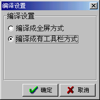
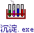
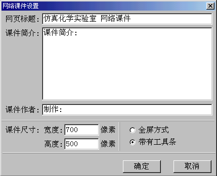
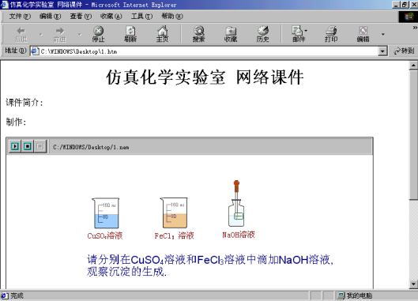

|
发布课件 您可以用三种方法发布《仿真化学实验室》的课件。 1.保存为《仿真化学实验室》可以支持的文件格式*.cem。只有《仿真化学实验室》才能打开这样的文件格式，并能对它进行编辑。 2.编译成可执行文件。用《仿真化学实验室》可以把制作的课件编译成可执行文件进行发布。编译成的可执行文件可以直接运行在装有Win98、Win2000、Win XP等操作系统的计算机上。这很有利于将您的课件传播出去。编译时从主菜单中选择[文件]->[编译成可执行文件]，会弹出“编译设置”对话筐。  在此对话筐中，您可以设置编译的方式。选择全屏方式，则编译后的程序没有工具栏也没有快捷按钮，各按钮的功能包含在弹出菜单中；选择带有工具栏的方式，则编译后的程序具有工具栏和工具栏上的快捷按钮。编译后的可执行文件具有与《仿真化学实验室》一样的图标。  3.生成网络课件。用《仿真化学实验室》可以生成网络课件。使您可以通过IE浏览器运行您的课件，也可以把您的课件插入用Authorware 或VB开发出的其它课件中。要想顺利的运行网络课件，您还必须在计算机中安装《仿真化学实验室》网络插件。网络插件是共享的，您可以在《仿真化学实验室》的官方网站www.eedduu.com上下载网络插件。如果您的学校有校园网，把生成的网络课件用网页格式整理起来，放在校园网上，就可以形成一个高质量的化学教学资源库！生成网络课件时从主菜单中选择[文件]->[生成网络课件]，会弹出“网络课件设置”对话筐。  在此对话筐中，您可以为网络课件制定网页标题，课件的说明等，也可以设置网络课件运行时是否带有工具栏。软件会为网络课件保存为两个文件分别是*.nem和*.htm。发布网络课件时，这两个文件要同时发布。其中*.htm是网页格式，双击它就可以运行网络课件了。 
|
南京金华科软件有限公司 025-4713252 025-4712155